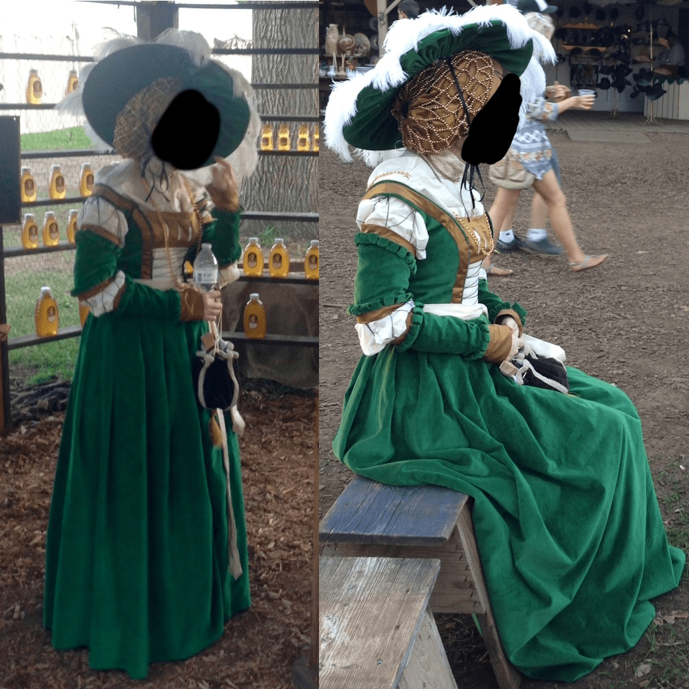
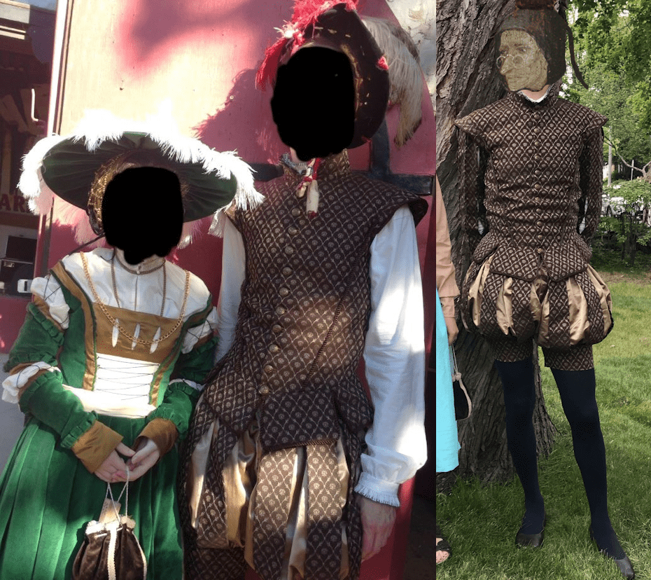

Historical
Cranach gown:

In 2015, I decided to attempt to make a more historically accurate
costume for the Renaissance Faire. At the time, I was really into
Landsknecht uniforms and the fashions of early 16th-century
Germany. I got several yards of green cotton velveteen for the
dress, along with some silk satin for the trim and cotton for the
chemise. Because I spent all my money on fabric, I had no money
for patterns and had to draft the dress pattern from scratch. For
the goldhaube/cap, I used the pattern from
here.
This website was super useful for info on this period of German
fashion.
Once I got my materials, I started by drafting the pattern for the
hemd/chemise. It was very simple to draft, as it was just a bunch
of rectangles. Originally, I planned to smock the neckline and
cuffs but decided against it as I wanted a smoother look. I sewed
it up, and I hand-embroidered the collar of the hemd with gold
thread. I also started to embroider the cuffs but stopped when I
realised they wouldn't be visible.
Next, I started drafting the pattern for the dress itself. This
was my second time drafting a dress pattern, and I didn't really
know what I was doing, so I struggled a lot and made lots of
mistakes. I had a lot of fun figuring out how to do the sleeves,
though. After I got the fit as good as I could, I machine-sewed
all the inside seams and hand-sewed the visible seams.

Lastly, I made a tellerbarret, a giant round hat covered in
feathers, and a goldhaube, a golden cap covered in pearls. For the
tellerbarret, I cut a long rectangle out of my cotton velveteen
and gathered it into a circle over a big wire hoop. I then covered
it in feathers. My mom did all the beading on the goldhaube, and
then I sewed it together. I stuffed it with wool to pad it out. It
was extremely heavy from all the pearls, so I had to use a bunch
of hair pins to keep it on my head, but it turned out beautifully.
Brown 16th century suit:
I also made an outfit for my dad to wear to the faire. It wasn't
based on any specific region or decade. Just generic fantasy/16th
century inspired. I used one of his old shirts to draft the
doublet and drafted the trunkhose and shirt from scratch. The
trunkhose turned out a little sad, so I stuffed a bunch of tulle
inside to make them puffier. This was my first time making clothes
for someone else. I'm really surprised at how well this outfit
turned out, especially the trunkhose because I'd only ever made
one pair of pants before. My dad learned some embroidery to
decorate the cuffs and collar of the shirt. My dad has worn this
outfit to the faire several times, and it's still holding up.

 Hellmouth
Hellmouth